Bible Concordance for Windows
The full study app: everything works offline, on your own computer.
Download for Windows
Version 3.0.0 · Windows 10 / 11, 64-bit
The Microsoft Store checks and signs the app, so Windows knows it is the genuine one. There is no account to make, nothing to buy and no adverts.
After installing: the free extras
Everything works straight away. These extras are optional, and a Getting started window in the app shows where each one is (it's also under Settings).
- Natural reading voice — built in, nothing to download: Settings → Read aloud.
- Library — extra Bibles, commentaries, dictionaries, devotionals and books: Study → Library → Get more. Downloaded books appear under Books in the book list. Add from file takes e-Sword and MySword modules you have, too.
- Your phone — Settings → Keep in step → tick Let my phone sync, press Pair a phone, and type the code into the phone app. If Windows asks, allow the app on private networks.
- Bible pictures — choose the collections you want: Explore → Pictures → Download.
- NIV, NKJV and ESV — add your own free key from the publisher: Settings → Online translations.
Updating, and moving your notes
- The Microsoft Store keeps the app up to date for you; there is nothing to install by hand.
- Already using an earlier version that you installed from this website? Install this one from the Store. Your notes, highlights and Library are kept, because both versions use the same place on your computer, but make a backup first to be safe (My Study → Export). You can then remove the old copy in Settings → Apps; if its uninstaller offers to delete your data, say no.
- Your phone keeps in step over your home Wi-Fi (see above), and other computers through a folder they share (OneDrive, Google Drive, Dropbox, Synology): Settings → Keep in step.
- My Study → Export saves your notes, highlights, bookmarks and reading plans to a backup file. The same file can be restored in the Android app.
What's new in version 3
- Advanced search. Type a question in your own words and get an answer that quotes the Bible first and says where Christians hold different views. More than 400 questions are answered, with a short overview of each of the 66 books. Under an answer the app offers matching stories and “Verses for…” pages.
- Bible stories. 31 Bible stories, 22 “Verses for…” pages (anxiety, fear, hope, joy, love, wisdom, heaven and more) and 20 children's pages to read together, print and colour.
- Themes. A themed opening screen for the church year, from Advent to Trinity Sunday, plus Passover, Communion and Harvest. Choose your own look, interface font and Bible reading font. The app starts in dark mode; light is one tap away in Settings.
- Bible maps. Nine ready-made maps (the twelve tribes, the kingdoms, the ministry of Jesus, Paul's journeys and more) to zoom and drag, each with the passages it goes with.
- Sunday service. Print an order-of-service bulletin, and use your phone as a clicker for your slides on the same Wi-Fi (off until you switch it on).
- Strong's numbers now show in the Bibles you add to the Library that carry them.
- Reviews. Settings → About has a button to write a review on the Microsoft Store.
Screenshots
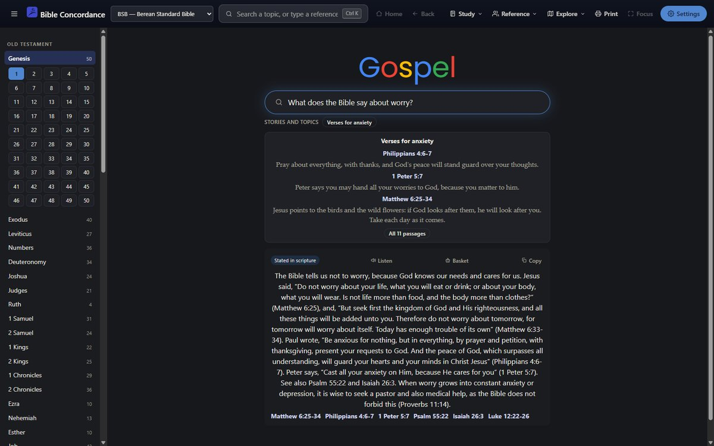
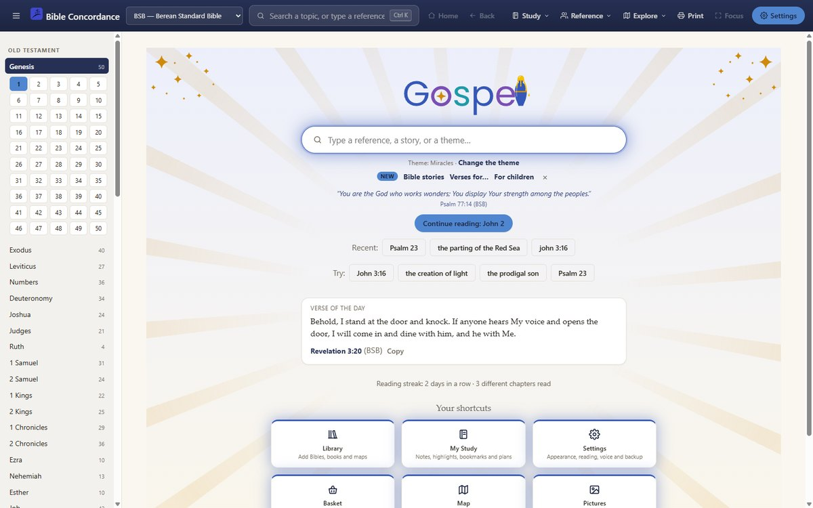
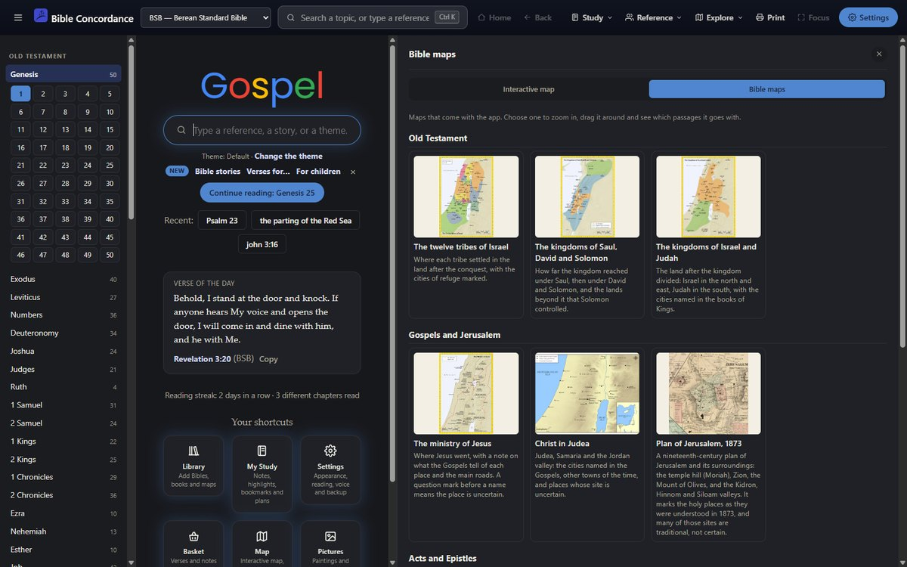
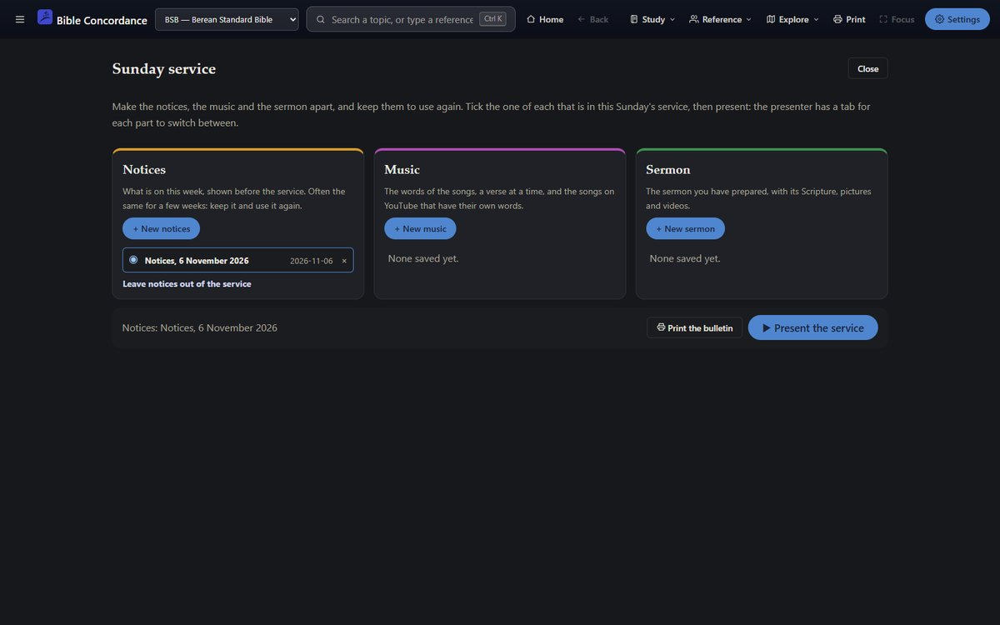
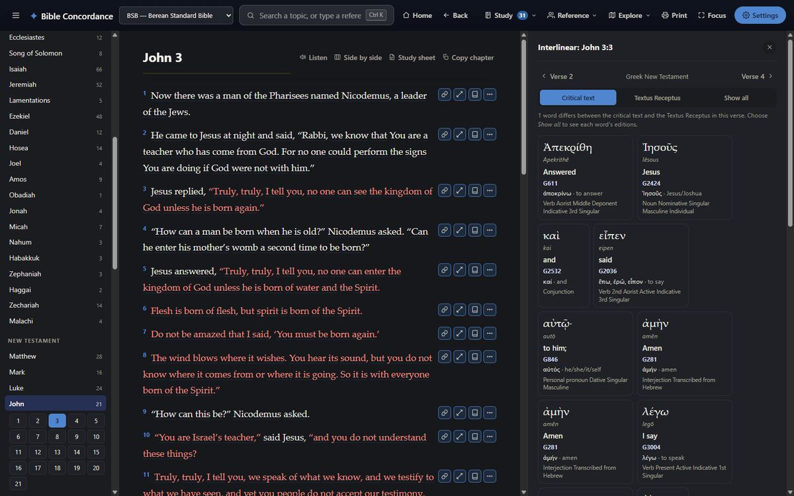
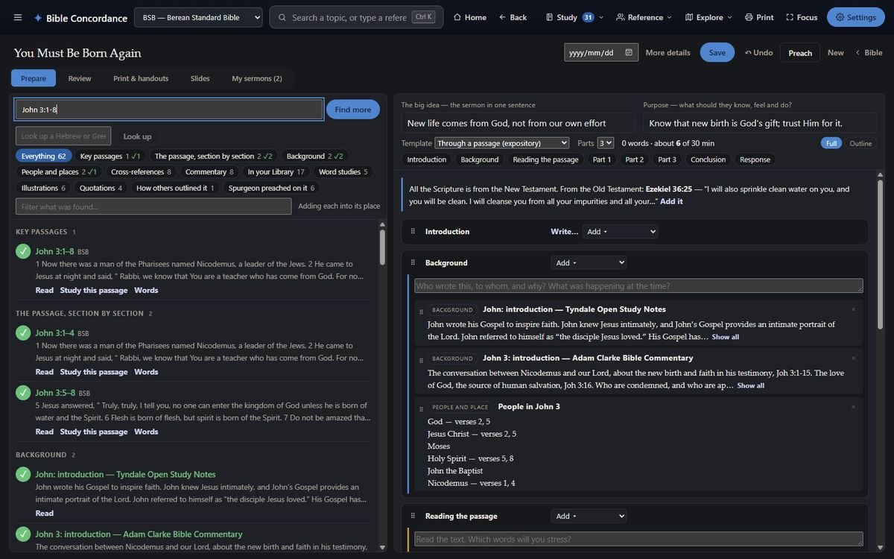
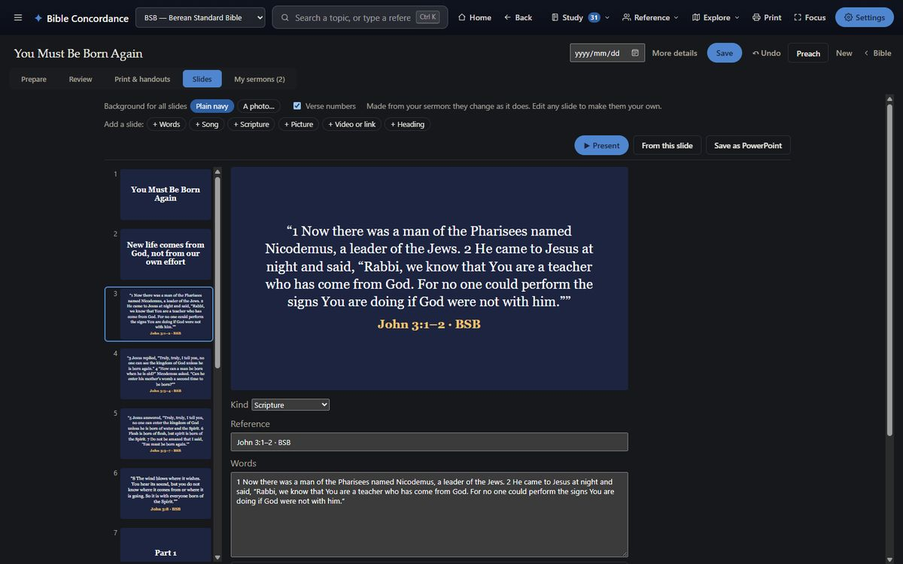
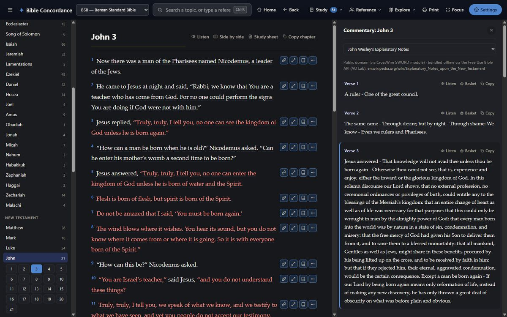
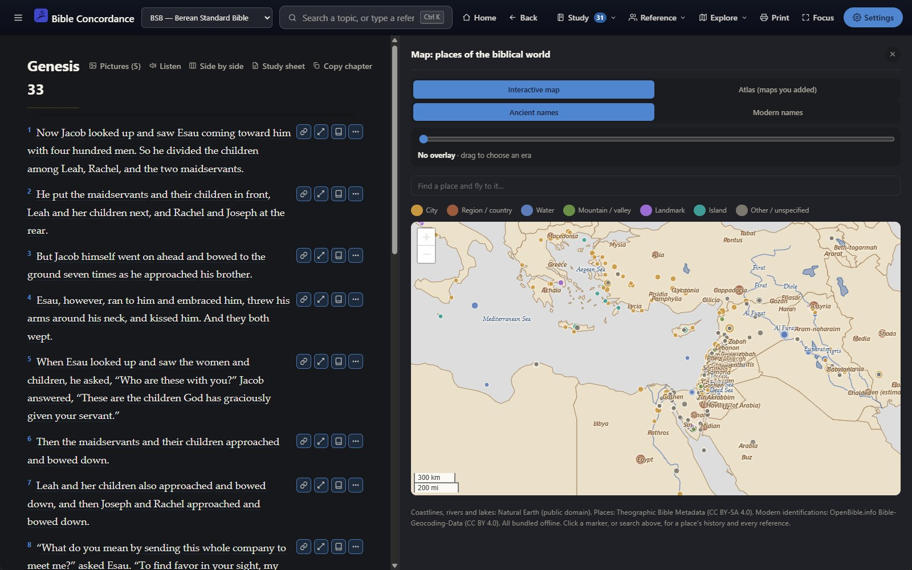
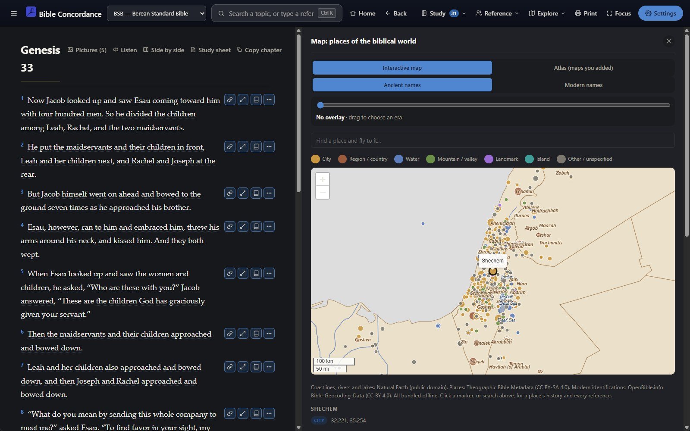
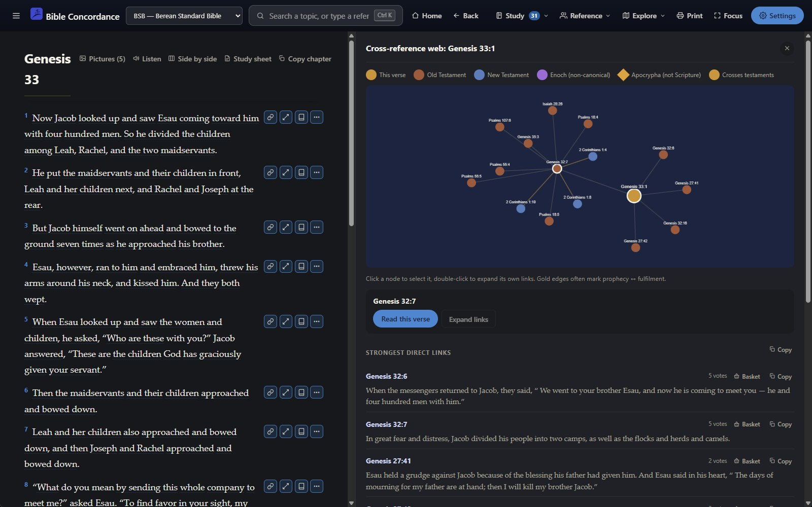
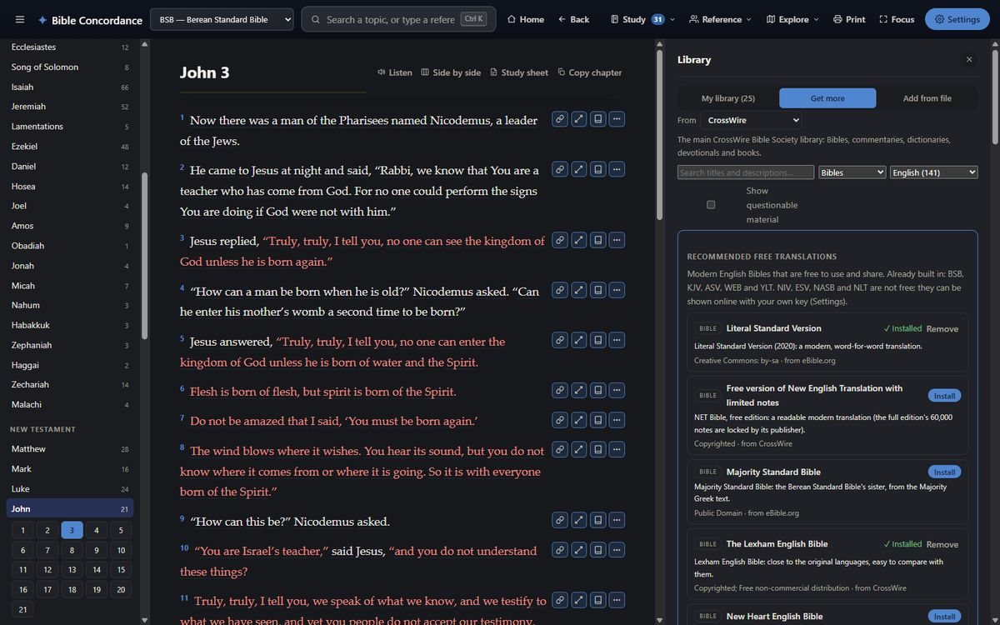
What's inside
Ask a question
Type a question in your own words. The answer quotes the Bible first and says where Christians hold different views. More than 400 questions are answered, plus a short overview of each of the 66 books.
Bible stories, verses and children's pages
31 stories with a picture each, 22 “Verses for…” pages for needs such as fear, hope, joy and wisdom (every passage with a line on what it says), and 20 children's pages to read, print and colour.
Themes
A themed opening screen for the church year, with your own colours, interface font and Bible reading font. The app starts in dark mode; light and “Match Windows” are in Settings.
Bible maps
Nine ready-made maps (the twelve tribes, the kingdoms, the ministry of Jesus, Paul's journeys and more) to zoom and drag, each with its passages.
Sunday service
Make the notices, the music and the sermon apart, present them one after another, and print an order-of-service bulletin. Use your phone as a clicker on the same Wi-Fi.
Multiple translations
BSB, KJV, ASV, YLT, WEB, plus the original Hebrew (WLC) and Greek (TR, THGNT) texts, side by side in Compare.
Strong's word study
Click any tagged word for its Hebrew/Greek root, definition and exact occurrence count across the Bible.
Seven offline commentaries
Matthew Henry, Jamieson-Fausset-Brown, Adam Clarke, John Gill, Calvin, Keil & Delitzsch, and Tyndale Open Study Notes — full text, full-text search.
Keyword & meaning search
Exact phrase search, word-frequency counts, and a local search that finds passages by meaning, not just matching words — "Daniel's prayer delayed by 21 days" finds Daniel 10, well-known stories and key topics are found by name, and misspellings are put right. No internet required.
Interactive map
Every geocoded place in the Bible, with an Ancient/Modern name toggle and a five-era historical-kingdom timeline you can scrub through.
People, places & events
A per-chapter index of everyone and everywhere mentioned, cross-linked with family relationships and every reference.
Cross-reference graph
An interactive, explorable web of related verses, colour-coded by testament, with prophecy/fulfilment links flagged.
Read aloud
A natural voice reads any chapter or Library book aloud, highlighting each sentence and scrolling along as it goes. Start from any verse or paragraph. Built in, and fully local.
My Study
Notes on a verse or a whole passage, with your own tags; highlights (with your own colour titles), bookmarks in the Bible and in your books, and reading plans, all kept locally and exportable as a backup.
Sermon builder
Type a subject or a passage and the app gathers Scripture, cross-references, commentary and the meaning of the Hebrew and Greek words. Arrange it in a template, review it, print handouts, keep a record of where you preached it, and show slides on the projector with a presenter view on your own screen. It gathers and lays out; the sermon is yours to write.
Free library
Download extra Bibles, commentaries, dictionaries, lexicons, devotionals and classic books from CrossWire, eBible.org and other free libraries — well over a thousand Bibles in many languages. Add your own EPUB or PDF books, and e-Sword or MySword modules, too.
Phone and computer in step
At home on your Wi-Fi, the phone app and this app keep your bookmarks, highlights, notes and reading plans the same. Other computers keep in step, sermons too, through a folder you share. No cloud account of ours.
Bible pictures
Gustave Doré, James Tissot and Sweet Publishing illustrations, each linked to its passage. Download only the collections you want.
Hebrew & Greek search
Find every place a Hebrew or Greek word is used, and narrow it by grammar — every aorist, every Piel, every genitive.
Side-by-side reading
Read a whole chapter in up to four translations at once, verse by verse.
Genealogies & Firsts
Hand-verified family trees from Adam to Jesus, plus a curated "Firsts & Milestones" index of biblical firsts, facts and promises.
Pick up where you left off
The app opens on the Bible you used last, with a Continue reading button for the chapter you were in. Your days in a row and chapters read are shown on the opening screen, and the verse of the day appears in your chosen Bible.
The 40 writers of the Bible
An Authors page lists the people who wrote the Bible, with a short note on each and the books they wrote, each one a link into the text. Where the writer is not named, it says so.
Backed up for you
Once a week the app saves your notes, highlights, bookmarks, reading plans and sermons to a backup file in your Documents folder, and keeps the newest eight. You can back up at once, pick another folder or switch it off, under Settings.
Optional online extras
Add your own free key to compare against NIV, NKJV or ESV live — everything else works fully offline without one.
Printable & exportable
Print any chapter, build a custom study sheet from gathered verses, or export your notes and highlights as a backup.